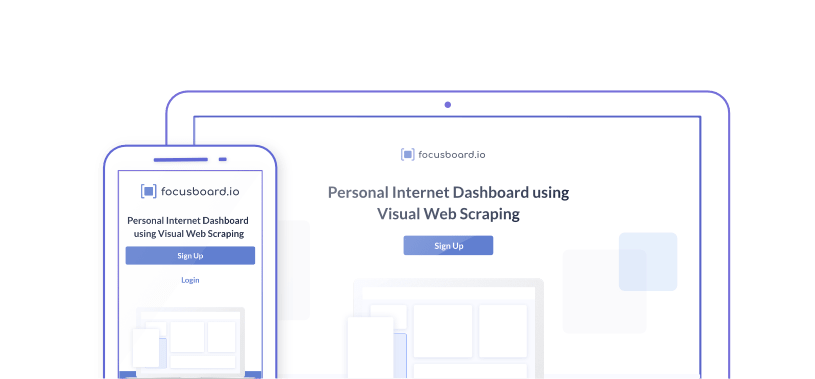
Focus Board

Challenges
Focusboard.io is a simple tool that allows you to visually scrape interesting parts of different websites to create your personal internet dashboard.
I was asked to prepare a landing page redesign to make it stand out and more attractive for the potential users. The scope of work also included the user’s dashboard redesign as well as login page.

Solutions
- To support a fresh look of a website I started from the new icon design. I wanted it to present the clear message about the product, be simple and minimalist (as it should function also as a Chrome Extension on a browser toolbar).
- I added “how it works” section to the website. I designed a set of custom icons to make it easier for the user to understand how the app works
- after experimenting with many different colours, the client and I decided on choosing calm blue as a primary colour. I filled the palette with the lighter shades for sections and darker for typography
- to keep the user updated about everything that is happening in the UI i also designed an empty dashboard initial state to make it more friendly and encourage to the engagement
Tools used
Affinity Designer / Affinity Photo
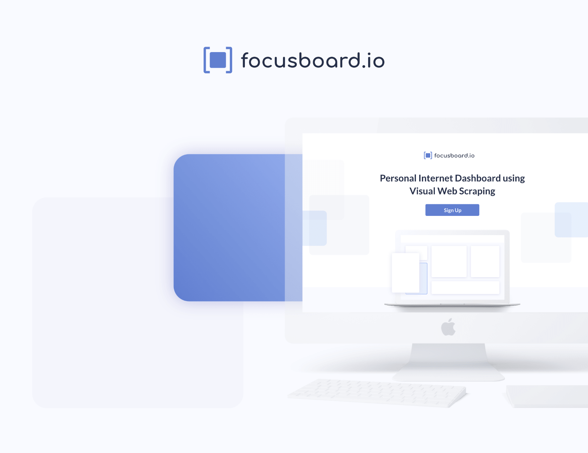
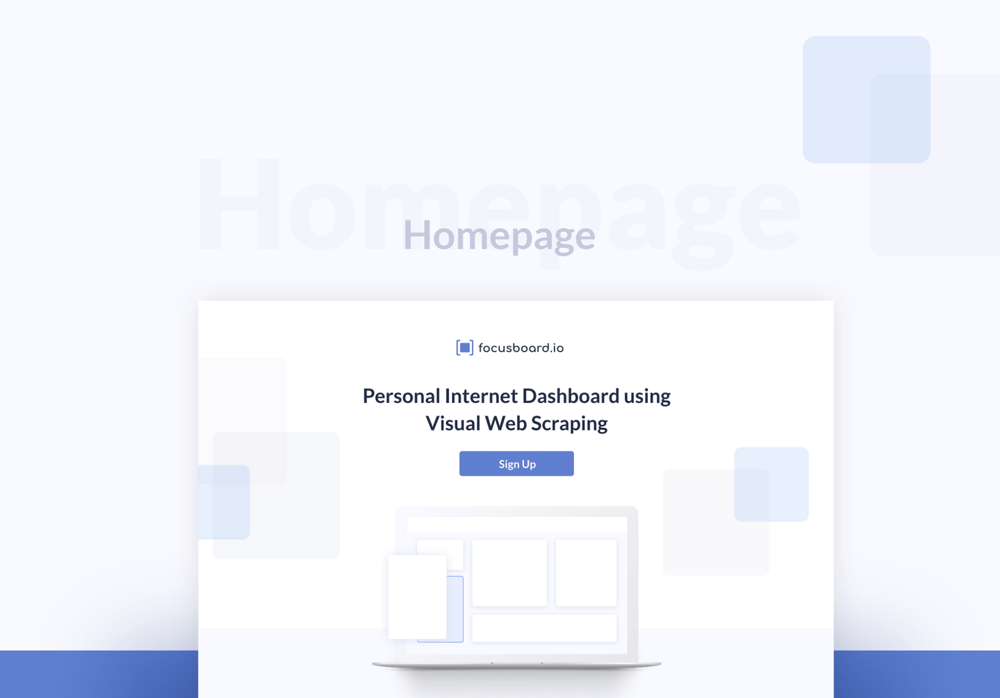
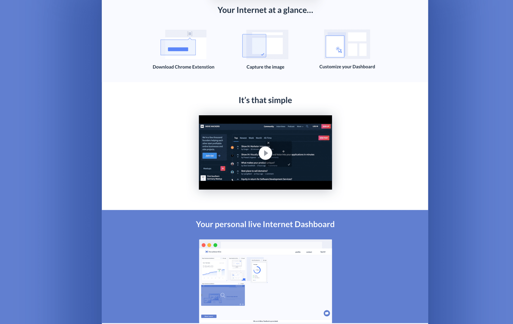
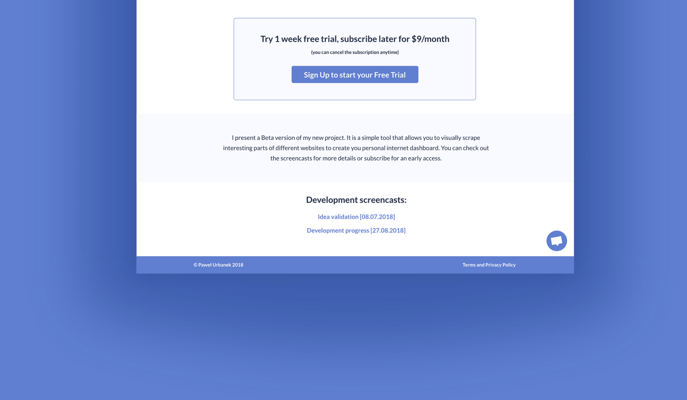
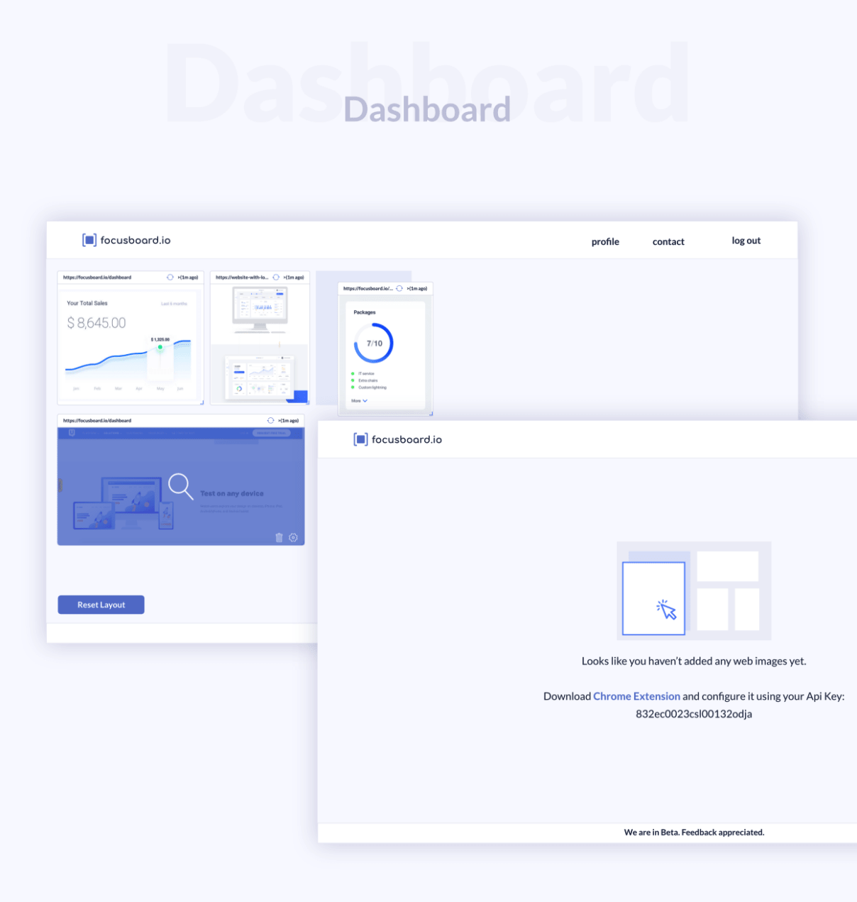
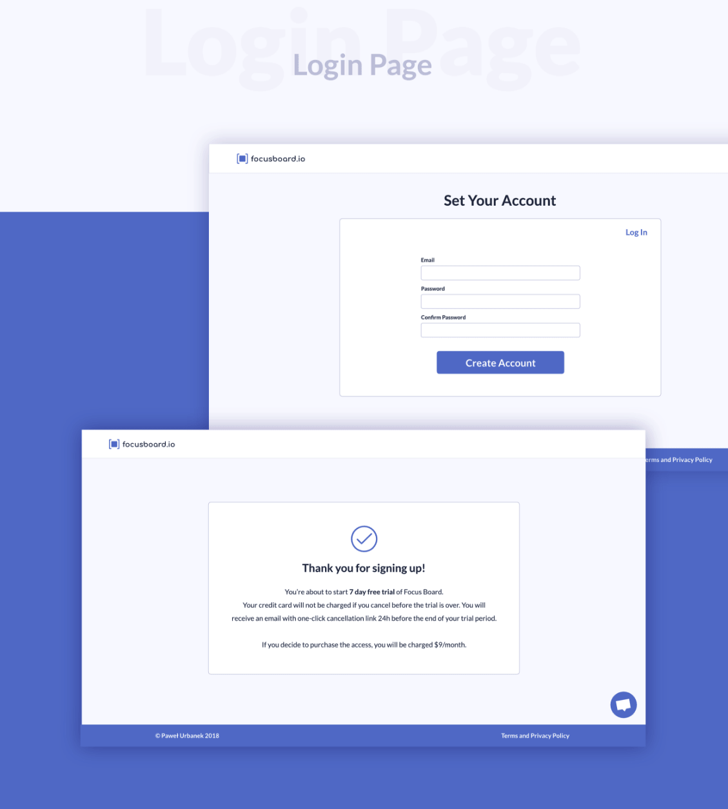
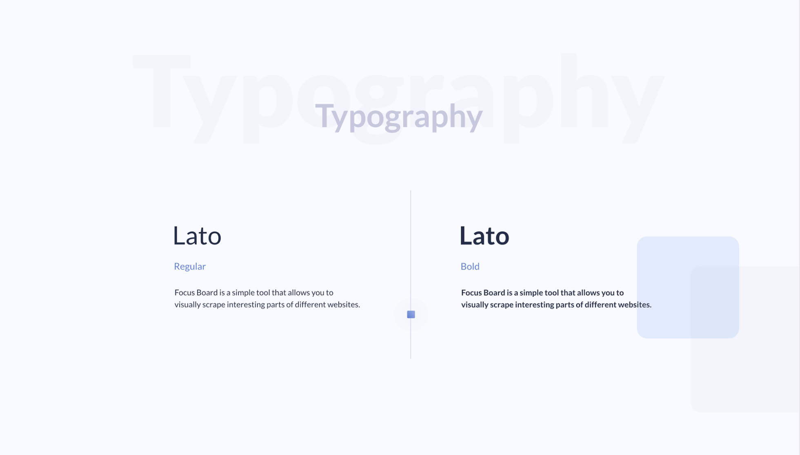
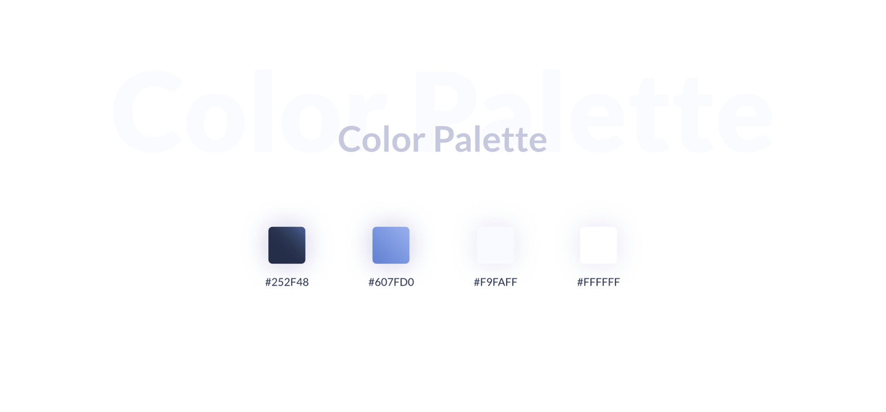
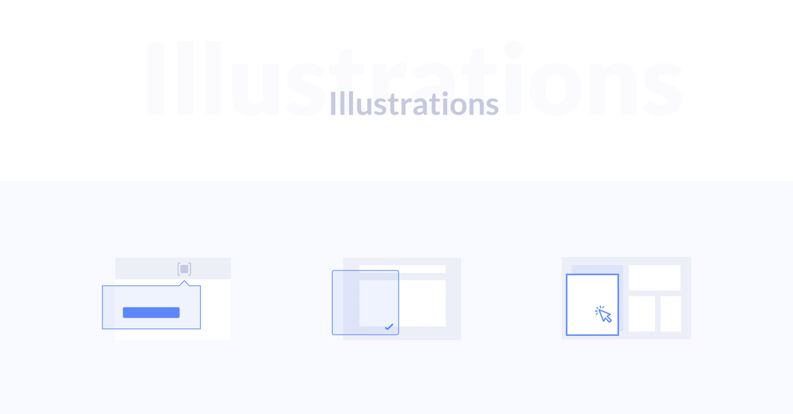
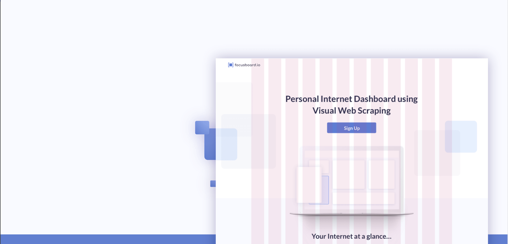
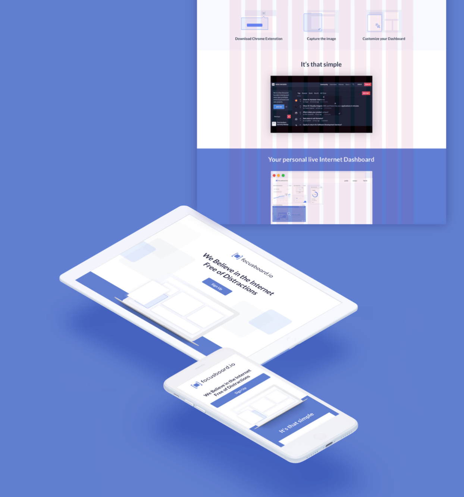